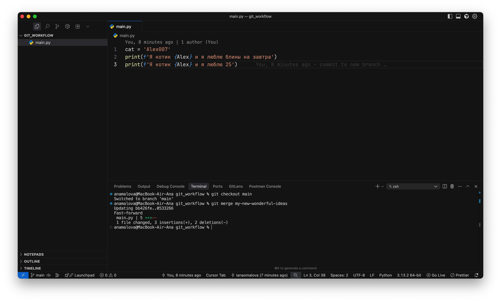

Как работает слияние и как работать с ветками
Представим, что Егор Б. осознал, что опасно писать код сразу в главной ветке. Ему нужно создать какую-то копию текущего проекта, но чтобы изменения не ломали главную, стабильно работающую ветку.
Для этого Егор Б., используя команду git checkout -b my-new-wonderful-ideas создает новую ветку и сразу на нее переключается:
Теперь он вносит изменения в файл, меняет имя котика и его поведение:

По старой схеме зальем изменения на удаленный репозиторий и посмотрим на результат в GitHub
В результате у нас появилась новая ветка, с названием my-new-wonderful-ideas, в которой 3 коммита:
- первые 2 были взяты из ветки main в момент создания новой ветке
- третий коммит мы сделали только что
При этом в ветке main по-прежнему 2 коммита

Что делать, если мы хотим, чтобы изменения из новой ветки добавились в главную ветку?
Для этого выполняется 2 шага:
- Сначала нам нужно вернуться в ту ветку, в которую мы планируем влить изменения. В нашем случае - это ветка main.
Делаем
git checkout main - После чего вливаем изменения из новой ветки в main:
git merge my-new-wonderful-ideas

Снова пушим изменения в удаленный репозиторий и смотрим, что стало с веткой main
Видим, что теперь ветка main также содержит тот самый 3й коммит, который мы делали в другой ветке:
Но помните, что если 2 ветки какое-то время разрабатывались параллельно и меняли содержимое одних и тех же файлов, то мердж этих веток может быть крайне болезненным.